システム設計 | CSV読込によるWebサイト情報更新プラグイン | ワクガンス
CSV読込・Webサイト情報更新プラグインはExcelなどで作成したCSVデータを読込、WEBサイトを更新するWordPressのプラグインです。

item_updater_2022.drawio.xmlのダウンロード(draw.io読込用)
ホーム
プログラミングの覚書
マネージメントtの覚書
システム設計 | CSV読込によるWebサイト情報更新プラグイン